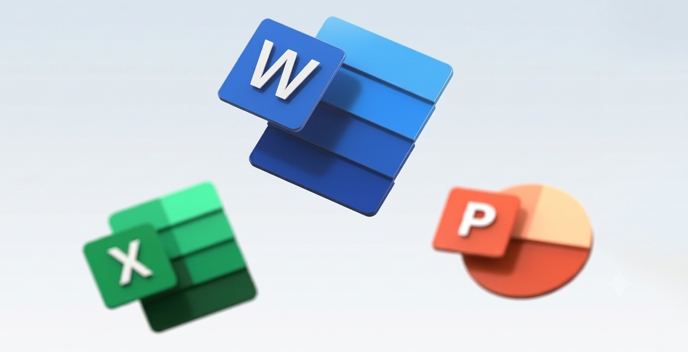

Bienvenido al recurso educativo diseñado para fortalecer las competencias digitales mediante el aprendizaje de herramientas ofimáticas como Microsoft Word, Excel y PowerPoint.
Este espacio contiene materiales de apoyo, ejemplos prácticos y actividades sencillas que permitirán mejorar el manejo de herramientas tecnológicas aplicadas a las actividades educativas y administrativas.
Fortalecer el manejo de herramientas ofimáticas mediante contenidos digitales que permitan mejorar la creación, organización y presentación de información.